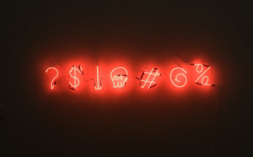
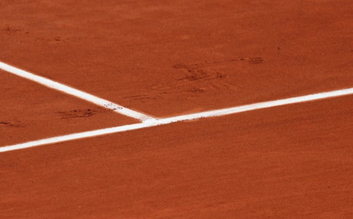

Пустота
Простое правило, которое часто нарушают: ставить рядом элементы с похожим смыслом и окружать их пустым пространством. Пустота — мощное средство воздействия.

Сетка
Размеры элементов и расстояния между ними укладываются в гармоничную схему — её называют сеткой. Если элемент выпадает, зритель может это заметить.

Шрифты
Не больше трёх шрифтов на сайт. Один для заголовков, второй — для всех остальных текстов, третий — для выделения важных слов. Должно хватить.

Цвета
Обычно на сайте два цвета: ведущий и акцентный. Подобрать удачную цветовую пару можно за счёт насмотренности или специальных инструментов.